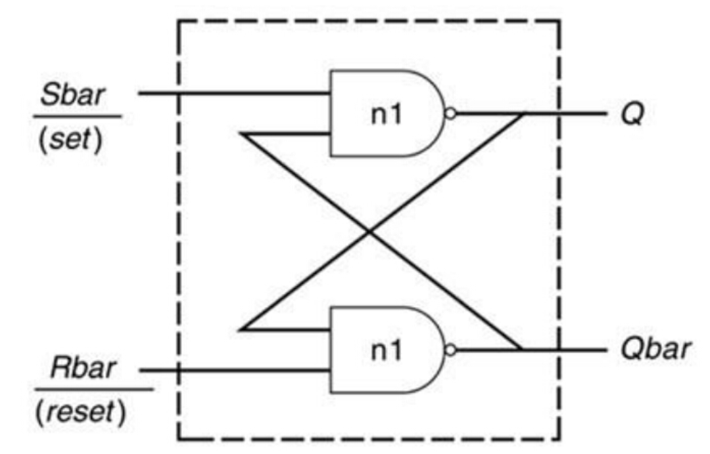
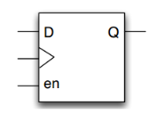

キーワード：フリップフロップ、ラッチ
Latchの意味
ラッチ（Latch）は、レベルトリガの記憶素子であり、データ保存の動作は入力クロック（またはイネーブル）信号のレベル値に依存します。ラッチがイネーブル状態のときだけ、出力はデータ入力に応じて変化します。
レベル信号が無効な場合、出力信号は入力信号に応じて変化し、バッファを通過したかのようになります。レベルが有効な場合、出力信号はラッチされます。激励信号のあらゆる変化は、直接ラッチの出力状態の変化を引き起こし、過渡特性が不安定なために発振現象が発生する可能性が非常に高くなります。
ラッチの模式図は以下の通りです：

フリップフロップ（flip-flop）は、エッジトリガの記憶素子であり、データ保存の動作（状態遷移）は、ある信号の立ち上がりエッジまたは立ち下がりエッジによって同期されます（記憶素子の状態遷移を非常に短い時間内に制限します）。
フリップフロップの模式図は以下の通りです：

レジスタ（register）は、Verilog において演算に参加するデータや演算結果を一時的に格納するための変数です。変数がレジスタとして宣言されると、フリップフロップに合成されることもあれば、Latch や wire 型変数に合成されることもあります。しかし、ほとんどの場合、フリップフロップに合成されることを望みますが、コードの書き方の問題により、意図しない Latch 構造に合成されることがあります。
Latch の主な危害は次の通りです：
- 1）入力状態が何度も変化する可能性があり、グリッチが発生しやすく、次段回路の不確実性が増大します；
- 2）ほとんどの FPGA のリソースにおいて、Latch 構造を実現するためにフリップフロップよりも多くのリソースが必要になる場合があります；
- 3）ラッチが存在すると、静的タイミング解析がより複雑になります。
Latch は主にゲーテッドクロック（clock gating）の制御に使用されます。一般的な設計では、Latch が生成されないようにすべきです。
if構造が不完全
組み合わせ回路では、不完全な if - else 構造は latch を生成します。
例えば次のモデルでは、if 文に else 構造が欠けています。システムはデフォルトで else の分岐ではレジスタ q の値が保持されるとみなします。つまりデータを保存する機能を持つため、レジスタ q は latch 構造に合成されます。
例
input data,
input en ,
output reg q) ;
always @(*) begin
if (en) q = data ;
end
endmodule
このような latch を避ける方法は主に2つあります。1つは if-else 構造を完全にすること、もう1つは信号に初期値を代入することです。
例えば、上記モデル中の always 文は、次の2つの形式に変更できます：
例
always @(*) begin
if (en) q = data ;
else q = 1'b0 ;
end
//初期値を代入
always @(*) begin
q = 1'b0 ;
if (en) q = data ; //enが有効ならqの値を書き換え、そうでなければqは0のまま
end
しかし順序回路では、不完全な if - else 構造は latch を生成しません。例えば次のモデルです。
これは、q レジスタが保存機能を持ち、その値がクロックのエッジでのみ変化するためです。これはまさにフリップフロップの特性です。
例
input clk ,
input data,
input en ,
output reg q) ;
always @(posedge clk) begin
if (en) q <= data ;
end
endmodule
組み合わせ回路において、条件文に多くの代入文がある場合、各分岐条件での代入文が不完全であることでも latch が生成されます。
実際、各信号の論理を分割して見ると、これも if-else 構造が不完全であり、関連するレジスタ信号が他の条件での代入動作を欠いていることに相当します。例えば：
例
input data1,
input data2,
input en ,
output reg q1 ,
output reg q2) ;
always @(*) begin
if (en) q1 = data1 ;
else q2 = data2 ;
end
endmodule
このような場合も、代入文を完全に補充するか、初期値を代入することで latch を回避できます。例えば：
例
//q1 = 0; q2 = 0 ; //またはここで q1/q2 に初期値を代入
if (en) begin
q1 = data1 ;
q2 = 1'b0 ;
end
else begin
q1 = 1'b0 ;
q2 = data2 ;
end
end
case構造が不完全
case 文が Latch を生成する原理は、if 文とほぼ同じです。組み合わせ回路では、case の選択肢リストが不完全で default キーワードがなく、または複数の代入文が不完全な場合にも Latch が生成されます。例えば：
例
input data1,
input data2,
input [1:0] sel ,
output reg q ) ;
always @(*) begin
case(sel)
2'b00: q = data1 ;
2'b01: q = data2 ;
endcase
end
endmodule
もちろん、このような latch を除去する方法も2つあります。case の選択肢リストを完全にすることと、信号に初期値を代入することです。
case の選択肢リストを完全にする場合、すべての選択肢の結果を列挙するか、default キーワードを使用して他の選択肢の結果を代替できます。
例えば、上記の always 文には次の2つの修正方法があります。
例
case(sel)
2'b00: q = data1 ;
2'b01: q = data2 ;
default: q = 1'b0 ;
endcase
end
always @(*) begin
case(sel)
2'b00: q = data1 ;
2'b01: q = data2 ;
2'b10, 2'b11 :
q = 1'b0 ;
endcase
end
元の信号への代入または判断
組み合わせ回路では、ある信号の代入元にその信号自身が含まれる場合、または判断条件にその信号自身の論理が含まれる場合にも latch が生成されます。このとき信号にも保存機能が必要ですが、クロック駆動がないためです。このような問題は if 文、case 文、三項演算子（?式）のいずれでも発生する可能性があります。例えば：
例
reg a, b ;
always @(*) begin
if (a & b) a = 1'b1 ; //a -> latch
else a = 1'b0 ;
end
//signal itself are the assigment source
reg c;
wire [1:0] sel ;
always @(*) begin
case(sel)
2'b00: c = c ; //c -> latch
2'b01: c = 1'b1 ;
default: c = 1'b0 ;
endcase
end
//signal itself as a part of condition in "? expression"
wire d, sel2;
assign d = (sel2 && d) ? 1'b0 : 1'b1 ; //d -> latch
このような Latch を回避する方法は1つだけです。それは、組み合わせ回路でこのような書き方を避け、信号が自分自身に代入せず、代入された信号自体を判断条件の論理に使用しないことです。
例えば、即時の出力が要求されない場合、信号を1クロック周期遅延させてから関連ロジックを組み合わせることができます。上記の最初の Latch を生成するコードは次のように記述できます：
例
reg a_r ;
always (@posedge clk)
a_r <= a ;
always @(*) begin
if (a_r & b) a = 1'b1 ; //there is no latch
else a = 1'b0 ;
end
センシティブ信号リストが不完全
組み合わせ回路で always@() ブロック内のセンシティブリストが完全に列挙されておらず、トリガされるべきときにトリガされない場合、関連するレジスタは以前の出力結果を保持するため、ラッチが生成されます。
この場合、センシティブ信号を完全にするか、直接 always@(*) を使用することで latch を除去できます。
まとめ
要するに、latch の生成を避けるために、組み合わせ回路では以下の点に注意する必要があります：
- 1）if-else または case 文は、構造を必ず完全にすること
- 2）代入される信号を代入元や条件判断に置かないこと
- 3）センシティブ信号リストは always@(*) を多用すること
クリックしてノートを共有
<p style="font-size:14px;">ノートは本記事の内容の拡張である必要があります！</p><br> <p style="font-size:12px;"><a href="../tougao.html" target="_blank">記事の投稿は、ここをクリック</a></p> <p style="font-size:14px;"><a href="./runoob-user-test-intro.html" target="_blank">登録招待コードの取得方法</a></p> <h3 class="text-muted"><i class="fa fa-info-circle" aria-hidden="true"></i> ノートを共有する前に<a href=".." class="runoob-pop">ログイン</a>が必要です！</h3> <p><a href="./runoob-user-test-intro.html" target="_blank">登録招待コードの取得方法</a></p>